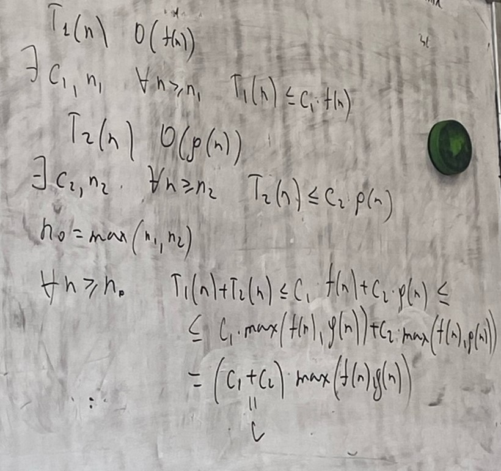

Лемма «Правило суммы»
Пусть T1(n) - время выполнения программы P1 и имеет степень роста O(f(n))
T2(n) - время выполнения программы P2 и имеет степень роста O(g(n))
Тогда время последовательного выполнения программ = T1(n) + T2(n) и имеет степень роста O(max(f(n), g(n)))

Время выполнения конечной последовательности программных фрагментов без учета констант имеет порядок фрагмента с наибольшим временем выполнения
Замечание:
В общем случае нахождение времени выполнения программы (верхняя граница) задача сложная. Не существует полного набора правила анализа программ. Только некоторые из них базовые.
Базовые правила анализа программ:
- Время выполнения операторов присваивания ввода/вывода обычно имеет порядок O(1), но есть исключения, например в языках, где можно присваивать большие массивы или в случае вызова функции.
- Время выполнения последовательности операторов вычисляется с помощью правила сумм, как наибольшее из времени выполнения операторов данной последовательности.
- Оператор ветвления (условный оператор) имеет вид [если *логическое выражение* то *оператор 1* иначе *оператор 2*]. Время вычисление времени логического выражения обычно O(1), тогда время выполнения всей конструкции это max(оператор 1, оператор 2).
- Время выполнения цикла вычисляется как сумма времени выполнения всех итераций цикла (1 итерация – время проверки условия). Часто время выполнения цикла вычисляется как произведение количество итераций цикла на наибольшее возможное время выполнения тела цикла для 1 итерации.
Скачать документ с лекцией...